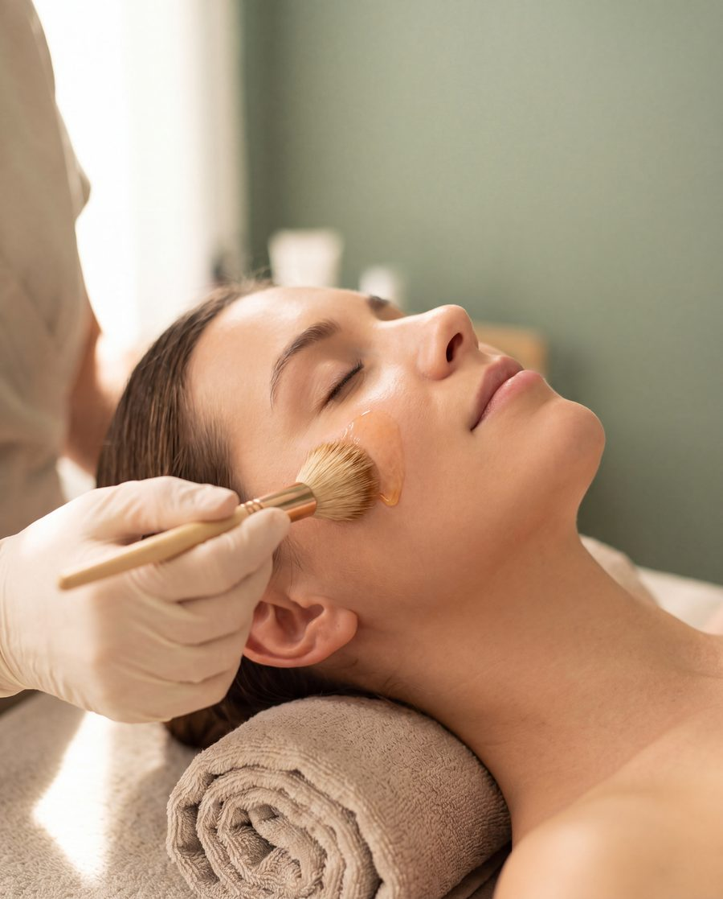
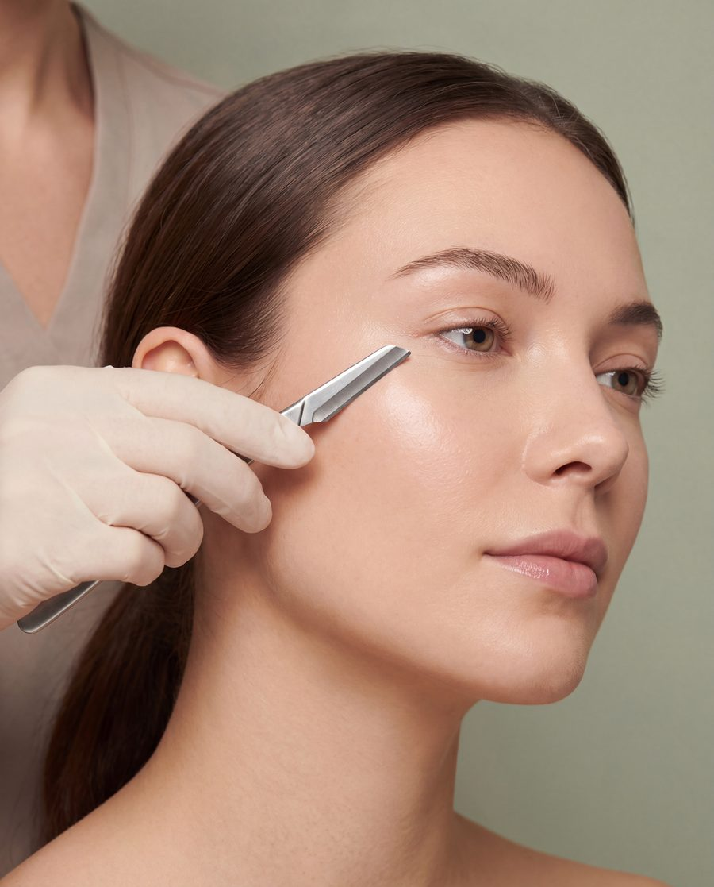
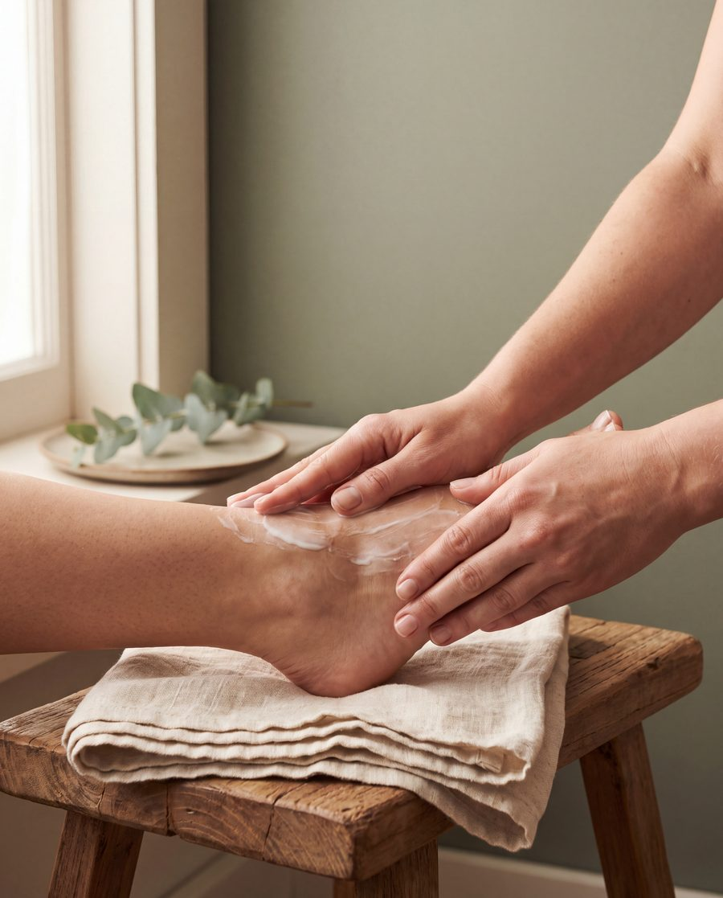

Fine LinesAesthetic Salon
Facial treatments built around your actual skin concern, whether that's pigmentation, anti-aging or acne, using professional-grade Lamelle products, plus the homecare guidance that makes the results last.
“Professional treatments are an investment, but your homecare is what keeps that investment working every day.”
At Fine Lines Aesthetic Salon, we believe that beautiful, healthy looking skin is achieved through the right combination of professional treatments and consistent homecare.
Every treatment is tailored to each client's skin's individual needs, while your homecare routine is carefully selected to support and maintain your results between appointments.
A treatment menu put together to address the skin concerns we see most often - with every treatment selected to suit your skin's individual needs.



I qualified as a beauty therapist in 2012 and have continued to expand my knowledge and skills through additional courses and ongoing development over the years.
My journey as the owner of my own salon began in January 2022 in Worcester. Since then I have had the privilege of building meaningful relationships with my clients, many of whom have become like friends over the years.
I have a real passion for skin health, advanced facial treatments and helping my clients feel confident in their own skin.
My goal is simple: to help you achieve healthier, more radiant skin while making every visit feel like time well spent on yourself.
Every skin concern is different. Whether your concern is pigmentation, acne or signs of ageing, your treatment plan is tailored to your individual skin needs.
Lamelle is a scientifically formulated skincare range designed to support healthy balanced and resilient skin - both at the salon and at home.
You're not just another appointment. Every treatment is performed with care, attention to detail and your skin's wellbeing in mind.
You'll receive realistic, personalised advice without pressure to purchase products or book treatments you don't need.
The fastest way to book a treatment or ask a question is a WhatsApp message straight to Michelle.